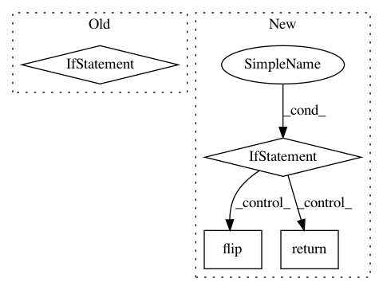

6c06a88957549b1405f43361e4aa911abc56ef66,se3cnn/kernel.py,,cube_basis_kernels,#Any#Any#Any#Any#,154
Before Change
:return: basis of equivariant kernels of shape (N_basis, 2 * order_out + 1, 2 * order_in + 1, size, size, size)
"""
basis = radial_window(*_sample_cube(size, order_in, order_out))
if basis is not None:
// normalize filter energy (not over axis 0, i.e. different filters are normalized independently)
basis = basis / basis.view(basis.size(0), -1).norm(dim=1).view(-1, 1, 1, 1, 1, 1)
return basis
////////////////////////////////////////////////////////////////////////////////////////////////////////////////////////////////////////////////////////////////
After Change
:return: basis of equivariant kernels of shape (N_basis, 2 * order_out + 1, 2 * order_in + 1, size, size, size)
"""
basis = radial_window(*_sample_cube(size, order_in, order_out))
if basis is None:
return None
// normalize filter energy (not over axis 0, i.e. different filters are normalized independently)
basis = basis / basis.view(basis.size(0), -1).norm(dim=1).view(-1, 1, 1, 1, 1, 1)
// check that rho_out(u) K(u^-1 x) rho_in(u^-1) = K(x) with u = rotation of +pi/2 around y axis
tmp = basis.transpose(3, 5).flip(5) // K(u^-1 x)
tmp = torch.einsum(
"ij,bjkxyz,kl->bilxyz",
(
In pattern: SUPERPATTERN
Frequency: 3
Non-data size: 4
Instances
Project Name: mariogeiger/se3cnn
Commit Name: 6c06a88957549b1405f43361e4aa911abc56ef66
Time: 2018-10-04
Author: geiger.mario@gmail.com
File Name: se3cnn/kernel.py
Class Name:
Method Name: cube_basis_kernels
Project Name: analysiscenter/batchflow
Commit Name: 49f4e83ae4323e032bdd232e466e59b4aeceb458
Time: 2018-03-28
Author: g.ivanov@analysiscenter.ru
File Name: dataset/batch_image.py
Class Name: ImagesBatch
Method Name: _flip_
Project Name: tensorly/tensorly
Commit Name: f937bbf05fed3d436cd07d159b451d448fe6eba2
Time: 2021-02-06
Author: ameyer@ucla.edu
File Name: tensorly/backend/mxnet_backend.py
Class Name: MxnetBackend
Method Name: sort